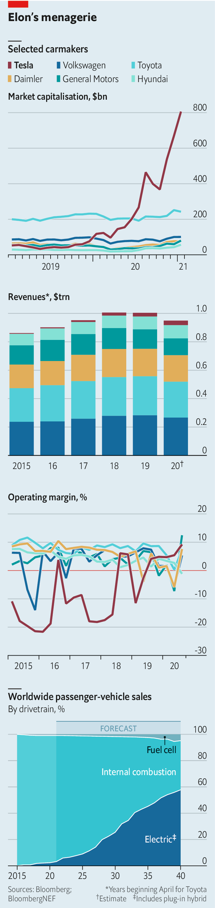

Text
2021-02-02T14:01:07+00:00
Carmaking
汽车制造
汽車製造
Electric shock and awe
电击与震慑
電擊與震懾
A Tesla bull debates a Tesla bear
特斯拉看涨与看跌之辩
特斯拉看漲與看跌之辯
TESLA’S SHARE price will travel in only one direction—up. Despite accelerating in “ludicrous” mode, by more than 700% in 2020, Tesla has plenty left in the tank, to borrow a phrase that the firm is consigning to history. Its impact on the car industry cannot be overstated. But it is a mistake to judge it by the standards of the firms it will leave in its tracks. Tesla is a technology firm, set to disrupt not just carmaking but personal transport, energy (thanks to its battery technology and solar power), robotics, health care and more besides.
特斯拉的股价走势将只有一个方向——涨。尽管它以“狂暴”模式在2020年上行超过700%，但用一句正在被这家公司踢进历史的话来说，它“油箱里的油还多着呢”。特斯拉对汽车产业的影响怎么说都不为过。但用那些将被它碾压的公司的标准来评判它是不对的。它是一家科技公司，要颠覆的不仅仅是汽车制造，还有个人交通、能源（得益于它的电池技术和太阳能）、机器人、医疗，以及其他很多。
特斯拉的股價走勢將只有一個方向——漲。儘管它以“狂暴”模式在2020年上行超過700%，但用一句正在被這家公司踢進歷史的話來說，它“油箱裡的油還多着呢”。特斯拉對汽車產業的影響怎麼說都不為過。但用那些將被它碾壓的公司的標準來評判它是不對的。它是一家科技公司，要顛覆的不僅僅是汽車製造，還有個人交通、能源（得益於它的電池技術和太陽能）、機器人、醫療，以及其他很多。
Its valuation is justified by its potential to dominate the future of mobility alone. Operating margins were close to 7% in the first nine months of 2020, higher than any big rival’s—and rising. Its market is exploding. Electric vehicles (EVs) now make up around 3% of all car sales, of which Tesla accounts for a fifth. As regulations tighten and ranks of climate-worriers swell, a third of all cars sold globally will be electric by 2030—rising to over half ten years later. Even if Tesla won’t make 20m EVs a year by 2030, as its boss, Elon Musk, hopes, it could control 25-30% of the EV market.
单是有潜力主导未来的出行这一点就可证明特斯拉的市值是合理的。2020年前九个月，它的营运利润率接近7%，高于所有大型竞争对手——而且还在上升。它的市场呈爆发式增长。目前，电动汽车约占汽车总销量的3%，而特斯拉又占其中的五分之一。随着法规的收紧以及担忧气候变化的群体扩大，到2030年电动汽车将占到全球汽车总销量的三分之一——再过十年将增长到一半以上。即使特斯拉不能像它的老板伊隆·马斯克所希望的那样，到2030年年产2000万辆电动汽车，它也可能掌控电动汽车市场的25%到30%。
單是有潛力主導未來的出行這一點就可證明特斯拉的市值是合理的。2020年前九個月，它的營運利潤率接近7%，高於所有大型競爭對手——而且還在上升。它的市場呈爆髮式增長。目前，電動汽車約佔汽車總銷量的3%，而特斯拉又占其中的五分之一。隨着法規的收緊以及擔憂氣候變化的群體擴大，到2030年電動汽車將佔到全球汽車總銷量的三分之一——再過十年將增長到一半以上。即使特斯拉不能像它的老闆伊隆·馬斯克所希望的那樣，到2030年年產2000萬輛電動汽車，它也可能掌控電動汽車市場的25%到30%。
Tesla’s “production hell” is in the past. It just about hit a pre-pandemic delivery target of 500,000 cars in 2020 and rapidly erected a new factory in China—which on January 18th delivered its first Model Y, a small SUV. Another will come online shortly in Germany. So will a new battery “gigafactory” in Texas. This, and the ease with which it raised $12bn of capital amid the covid-19 crisis, shows it can expand at will.
特斯拉的“生产地狱”已经成为过去。它在2020年基本实现了新冠疫情爆发前制定的50万辆的交付目标，并迅速在中国新建了一家工厂——于1月18日交付了第一辆小型SUV“Model Y”。另一家工厂很快将在德国投产。还有一家新的电池“超级工厂”也将在得克萨斯投产。以上种种，加上它在新冠危机期间轻松融资120亿美元，显示了它随心所欲扩张规模的能力。
特斯拉的“生產地獄”已經成為過去。它在2020年基本實現了新冠疫情爆發前制定的50萬輛的交付目標，並迅速在中國新建了一家工廠——於1月18日交付了第一輛小型SUV“Model Y”。另一家工廠很快將在德國投產。還有一家新的電池“超級工廠”也將在得克薩斯投產。以上種種，加上它在新冠危機期間輕鬆融資120億美元，顯示了它隨心所欲擴張規模的能力。
The firm’s proven knack for speedy innovation will let it keep an unassailable technology lead over both established carmakers, struggling to free themselves of the legacy of internal combustion, and newcomers looking to steal its crown. Like other tech Goliaths such as Apple, its products will continue to define the category. Mr Musk has remade the car into a connected electronics device that will soon drive itself. Autonomous technology is already fitted to many Teslas, awaiting regulators to approve it. This will put Mr Musk in the front seat of the robotaxi as the world moves towards mobility services.
特斯拉已经证明了自己在快速创新上的天分，而这将让它保持牢不可破的技术领先优势，无论是对难以摆脱内燃机遗产的老牌汽车制造商，还是对觊觎它领导地位的新来者。与苹果等科技巨头一样，它的产品将继续定义一个行业。马斯克已经将汽车改造成了一种很快就能自主驾驶的联网电子设备。许多特斯拉车型都已配备了无人驾驶技术，只待监管机构批准。这让马斯克在世界朝着出行服务行进之时坐上了无人出租车的前排座椅。
特斯拉已經證明了自己在快速創新上的天分，而這將讓它保持牢不可破的技術領先優勢，無論是對難以擺脫內燃機遺產的老牌汽車製造商，還是對覬覦它領導地位的新來者。與蘋果等科技巨頭一樣，它的產品將繼續定義一個行業。馬斯克已經將汽車改造成了一種很快就能自主駕駛的聯網電子設備。許多特斯拉車型都已配備了無人駕駛技術，只待監管機構批准。這讓馬斯克在世界朝着出行服務行進之時坐上了無人出租車的前排座椅。
Tesla’s greatest asset is Mr Musk, a visionary spearheading rocket trips to Mars, neuroscience, grid-scale batteries and other transformational technologies. Investing in Tesla is a bet on his genius for turning the future into dollars.
富有远见卓识的马斯克是特斯拉最宝贵的资产，他引领着造火箭上火星、神经科学、电网级电池和其他革命性技术。投资特斯拉就是押注马斯克把未来转化为美元的天赋。
富有遠見卓識的馬斯克是特斯拉最寶貴的資產，他引領着造火箭上火星、神經科學、電網級電池和其他革命性技術。投資特斯拉就是押注馬斯克把未來轉化為美元的天賦。

TESLA’S SHARE price can travel in only one direction—reverse. A market value of $800bn, equal to that of the next eight biggest carmakers combined, is predicated on Elon Musk’s shake-up of the industry. Building a brand swiftly and making electric cars trendy is a real achievement. But Tesla’s revenues come from selling cars. Sales are rising—yet would need to swell seven-fold to match Toyota’s. Good luck.
特斯拉的股价走势只会有一个方向——跌。它8000亿美元的市值——相当于紧随其后的八大汽车制造商的总和——是基于对马斯克颠覆汽车产业的预期。能迅速建立一个品牌并让电动汽车流行起来，它确实成就斐然。但特斯拉的收入来自销售汽车。尽管销量在增长，但需要增长七倍才能与丰田匹敌。祝它好运。
特斯拉的股價走勢只會有一個方向——跌。它8000億美元的市值——相當於緊隨其後的八大汽車製造商的總和——是基於對馬斯克顛覆汽車產業的預期。能迅速建立一個品牌並讓電動汽車流行起來，它確實成就斐然。但特斯拉的收入來自銷售汽車。儘管銷量在增長，但需要增長七倍才能與豐田匹敵。祝它好運。
Yes, Tesla missed a delivery target of 500,000 cars in 2020 by a mere whisker. But it once said it would be making 1m a year by now. A goal of 20m electric cars by 2030 looks like another wild over-promise. Mr Musk has admitted that unless costs are contained the share price may be “crushed like a soufflé under a sledgehammer”.
确实，特斯拉距实现2020年交付50万辆车的目标只差毫厘。但它曾经表示到此时的年产量会是100万辆。实现2030年年产2000万辆的目标看上去又像是满嘴跑火车。马斯克也已承认，除非成本得到控制，否则股价可能会“像大锤下的蛋奶酥一样被砸个稀烂”。
確實，特斯拉距實現2020年交付50萬輛車的目標只差毫釐。但它曾經表示到此時的年產量會是100萬輛。實現2030年年產2000萬輛的目標看上去又像是滿嘴跑火車。馬斯克也已承認，除非成本得到控制，否則股價可能會“像大錘下的蛋奶酥一樣被砸個稀爛”。
Competition is getting fiercer. Big firms dragged their feet on electrification for a reason. Batteries were costly—and electric cars, niche products for the rich. But prices have fallen, regulations have tightened and buyers want electric vehicles (EVs). The giants promise a traffic jam’s worth: General Motors says it will have 30 models on the market by 2025; Volkswagen Group is eyeing 70 by 2030. Startups, many in China, are powering up. Mr Musk’s technology lead is running out of road.
竞争日趋激烈。过去大公司在电气化上裹足不前是有原因的。电池很贵，电动汽车因此只是富人喜欢的小众产品。但电池价格已经下降，而法规收紧了，买车的人想要电动车了。巨头们如今的行动势将造成“大堵车”：通用汽车表示到2025年将有30款车上市，大众计划到2030年共推出70款。包括很多中国企业在内的创业公司正开足马力。马斯克的技术领先优势正在渐渐丧失。
競爭日趨激烈。過去大公司在電氣化上裹足不前是有原因的。電池很貴，電動汽車因此只是富人喜歡的小眾產品。但電池價格已經下降，而法規收緊了，買車的人想要電動車了。巨頭們如今的行動勢將造成“大堵車”：通用汽車表示到2025年將有30款車上市，大眾計劃到2030年共推出70款。包括很多中國企業在內的創業公司正開足馬力。馬斯克的技術領先優勢正在漸漸喪失。
Rising profits in 2020 might reassure investors, but come mostly from selling carbon credits. And Tesla is not immune to the traditional forces that govern carmaking. Some models are ageing. Sales of Model S and Model X are falling and the firm is losing market share in Europe. In the first nine months of 2020 VW, Renault-Nissan-Mitsubishi and Hyundai-Kia all sold more EVs in Europe than Tesla did, according to Schmidt Automotive Research.
特斯拉在2020年持续增长的利润可能会让投资者安心，但这些利润主要来自出售碳信用额度。特斯拉并不对支配汽车制造的传统因素免疫。它的一些车型正在老化。Model S和Model X的销量都在下降，公司在欧洲的市场份额也在缩减。根据施密特汽车研究公司（Schmidt Automotive Research）的数据，2020年前九个月，大众、雷诺-日产-三菱以及现代起亚在欧洲的电动汽车销量都超过了特斯拉。
特斯拉在2020年持續增長的利潤可能會讓投資者安心，但這些利潤主要來自出售碳信用額度。特斯拉並不對支配汽車製造的傳統因素免疫。它的一些車型正在老化。Model S和Model X的銷量都在下降，公司在歐洲的市場份額也在縮減。根據施密特汽車研究公司（Schmidt Automotive Research）的數據，2020年前九個月，大眾、雷諾-日產-三菱以及現代起亞在歐洲的電動汽車銷量都超過了特斯拉。
The hype about autonomous cars has worn off as developing self-driving systems has proven tricky. Tesla’s pseudo-autonomous system requires constant monitoring by the driver. The full autonomy that would give robotaxis the freedom of the open road is years away. All this suggests Tesla will remain a niche luxury firm.
事实证明无人驾驶系统的研发绝非易事，对无人车的大肆炒作因而也渐平息。特斯拉的伪自主系统需要司机全程监控。能让机器人出租车自由行驶在开放道路上的那种完全自主系统还需要等待多年。所有这些都表明特斯拉仍将是一家小众豪华车公司。
事實證明無人駕駛系統的研發絕非易事，對無人車的大肆炒作因而也漸平息。特斯拉的偽自主系統需要司機全程監控。能讓機器人出租車自由行駛在開放道路上的那種完全自主系統還需要等待多年。所有這些都表明特斯拉仍將是一家小眾豪華車公司。
Then there is Mr Musk. He has toned down erratic tweets, like the one in 2018 implying Tesla was about to go private, which got him into hot water with regulators. But he is spreading himself too thinly between Tesla, SpaceX’s rocketry and other ventures. The strains from Tesla’s expansion could again bring out his demons—and spell disaster for shareholders.
还有马斯克自己。他已经不再像过去那样在推特上口不择言，比如在2018年发推暗示特斯拉将私有化就让他惹来了监管麻烦。但是，他现在要兼顾特斯拉、SpaceX的火箭技术和其他项目，精力过于分散。特斯拉扩张带来的压力可能会再次释放他体内的小恶魔，给股东们带来灾难。
還有馬斯克自己。他已經不再像過去那樣在推特上口不擇言，比如在2018年發推暗示特斯拉將私有化就讓他惹來了監管麻煩。但是，他現在要兼顧特斯拉、SpaceX的火箭技術和其他項目，精力過於分散。特斯拉擴張帶來的壓力可能會再次釋放他體內的小惡魔，給股東們帶來災難。